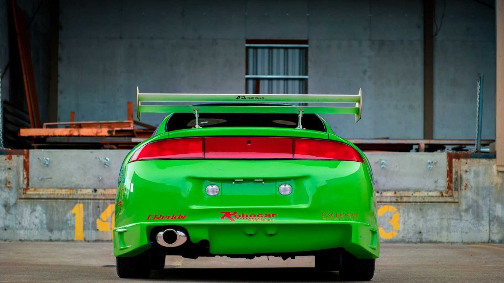

O Mitsubishi Eclipse foi um icônico carro esportivo da montadora japonesa nos anos 1990. Hoje, seguindo as
tendências de mercado, o nome "Eclipse" é usado para nomear um SUV médio da marca, que inclusive está à
venda no Brasil: o Mitsubishi Eclipse Cross.
No caso do esportivo guiado por Paul Walker, tínhamos um clássico 2.0 turbo de 213cv e 29,6 kgf/m de torque,
que faziam o bólido ir de 0 a 100 km/h em 7,1 segundos, com velocidade máxima de 224 km/h, números
impressionantes para a época. Além disso, a suspensão e freios eram pensados para favorecer a performance e
a segurança do carro.


© 2022 Todos os Direitos Reservados